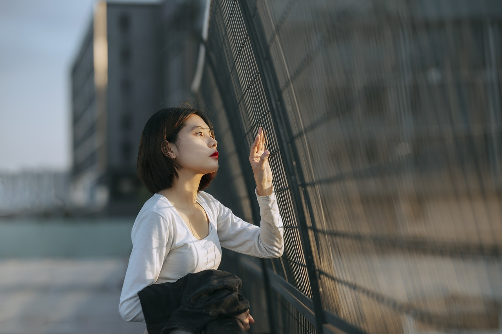
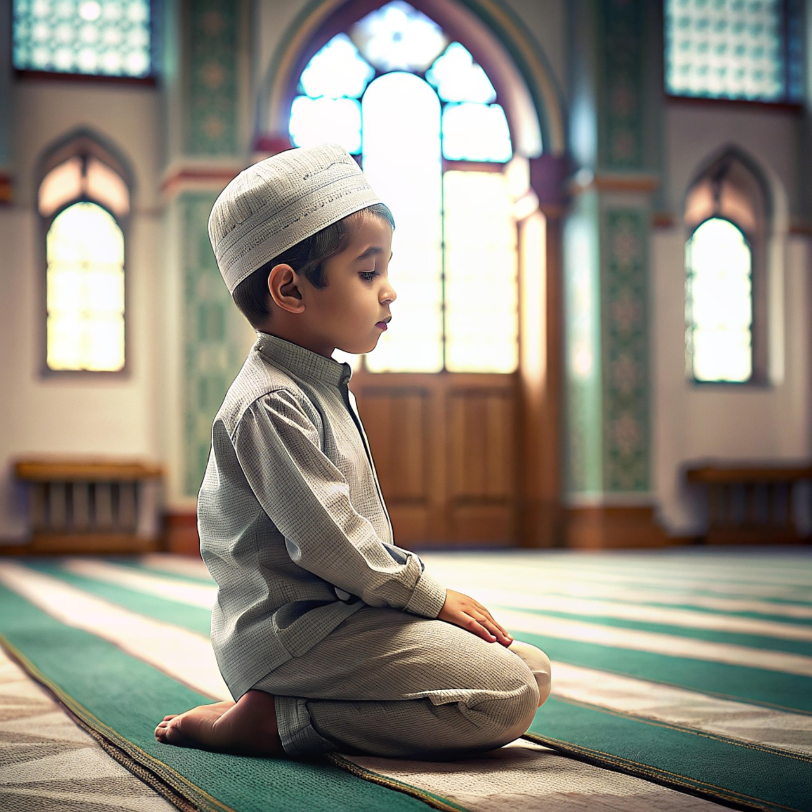
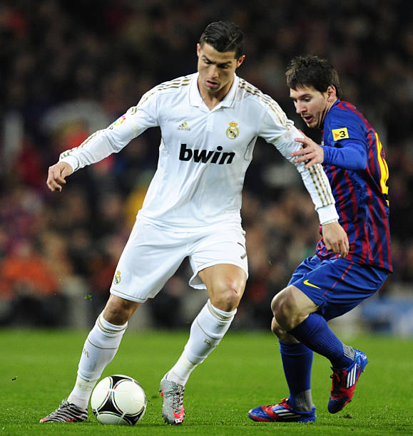

TYPES OF LOVE
🌒 1.One-Sided-LoveEchoes of a Silent Heart
This is the love that whispers but is never heard back. One-sided love is a quiet ache — where one heart beats for another that doesn’t notice, or can’t respond. It’s watching someone smile and wishing it was for you. It’s loving from afar, with no promise of return. Like a shadow trailing behind the sun, it exists in full devotion… but always in silence.
🔥 2. Deep mutual love-Depths of the unspoken
This is the kind of love that moves slowly, deeply — like roots growing beneath the earth. It’s mutual, powerful, and grounding. In deep love, words often fail because the feelings live in glances, in quiet spaces, in knowing without needing to ask. It’s not a flame that burns out quickly, but an ember that warms forever. A true meeting of minds, souls, and hearts.
🍃 3.Affection Not Yet Love-The gentle almost

Somewhere between friendship and falling lies the tender space of “almost.” It’s butterflies without reason, long conversations that mean more than they should, and touches that linger just a little too long. This affection isn’t love — not yet — but it holds the possibility of it. It’s the sweet confusion of something beginning to bloom.
💎 4.Love for Material Things-Chasing sparkle
This love is driven by the thrill of having, of owning, of shining. It’s the love of brands, beauty, and luxury — the desire for status wrapped in silver and gold. Not always shallow, but rooted in a need to feel seen, worthy, or secure. It’s the heartbeat behind impulse buys and glittering dreams, where satisfaction glows... but sometimes fades too quickly.
🙏 5.Love for Religion-Devotion beyond desire

This is a sacred kind of love — not for a person, but for a presence. Love for religion is deep and reverent, built on faith, discipline, and surrender. It shapes identity, purpose, and peace. It is expressed in prayer, ritual, sacrifice, and stillness. It is the love that believes, even in silence. A bond not seen, but deeply felt.
⚽ 6.Love for Sports-passion game

Electric and loud, this love beats to the rhythm of stadium chants and buzzer beeps. It’s fierce loyalty, weekend rituals, heartbreak in losses and euphoria in wins. Whether playing or watching, love for sports is about passion, adrenaline, and unity. It’s tribal and timeless — a fire lit by childhood heroes, carried into every cheer and celebration.